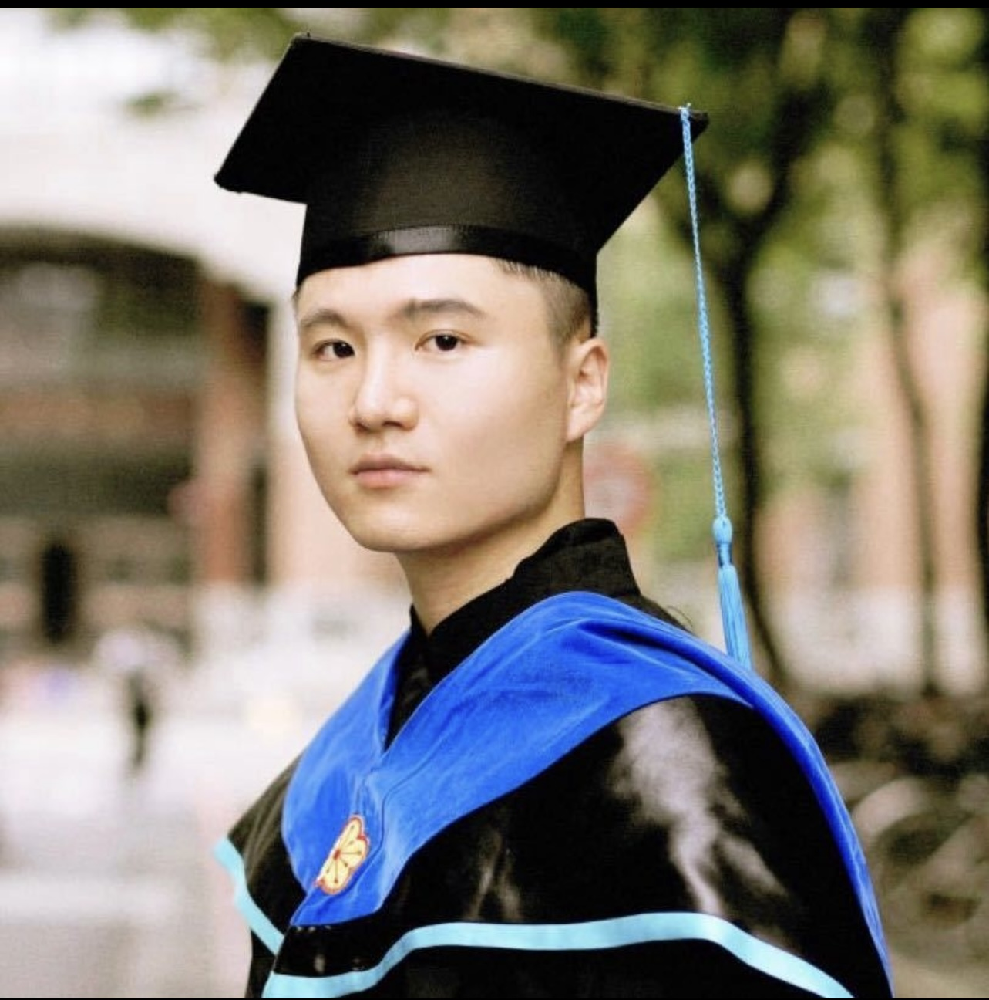

Siyang Jiang🎓 Phd Student
The Chinese University of Hong Kong
|
 |


Biography
Hello! I am a 4-th year PhD student in Information Engineering at The Chinese University of Hong Kong (CUHK), under the supervision of Prof. Guoliang Xing . Before joining CUHK, I obtained my M.S. in Electronic Engineering at National Taiwan University (NTU) in 2021, supervised by Prof. Ming-Syan Chen .
My research interest is exploring real-world AI-powered IoT systems (AIoT) through foundation models and distributed/federated data analytics for healthcare applications.
News
- [10/2025] Scholar Award, NeurIPS 2025!
- [09/2025] DUAL is accepted by NeurIPS 2025!
- [09/2025] Recieved Registration Scholarship, The Pytorch Conference 2025!
- [05/2025] Myo-Trainer is accepted by MobiCom 2025!
- [03/2025] SCX is accepted by SIGCOMM 2025!
- [11/2024] DrHouse is accepted by IMWUT/UbiComp 2024!
- [05/2024] ArtFL wins the Best Paper Award in IPSN 2024!
- [05/2022] PGADA wins the Best Student Paper Award in PAKDD 2022!
- ...
Selected Publications | Full List
* denotes equal contribution
|
Dual Alignment Framework for Few-shot Learning with Inter-Set and Intra-Set Shifts Siyang Jiang, Rui Fang, Hsi-Wen, Chen, Guoliang Xing ,Ming-Syan Chen NeurIPS 2025 PDF | Code | 🏆Scholar Award |
|
|
ArtFL: Exploiting Data Resolution in Federated Learning for Dynamic Runtime Inference via Multi-Scale Training Siyang Jiang*, Xian Shuai*, Guoliang Xing ACM/IEEE IPSN 2024 PDF | Code | Video | 🏆Best Paper Award |
|
|
PGADA: Perturbation-Guided Adversarial Alignment for Few-shot Learning Under the Support-Query Shift Siyang Jiang, Wei Ding, Hsi-Wen Chen, Ming-Syan Chen PAKDD 2022 PDF | Code | 🏆Best Student Paper Award |
|
|
DrHouse: An LLM-empowered Diagnostic Reasoning System through Harnessing Outcomes from Sensor Data and Expert Knowledge Bufang Yang*, Siyang Jiang*, Lilin Xu, Kaiwei Liu, Hai Li, Guoliang Xing, HongKai Chen, Xiaofan Jiang, Zhenyu Yan ACM IMWUT/UbiComp 2024 PDF |
|
Honors & Awards
- Scholar Award, NeurIPS 2025
- Registration Scholarship, The PyTorch Conference 2025
- Best Paper Award, IPSN (1/93 submissions) 2024
- Best Student Paper Award, PAKDD (1/627 submissions) 2022
- CUHK-Zhejiang Lab Ph.D Internship Scholarship 2023
Professional Services
-
Organizing Committee:
Publicity and Social Media Chair, ANAI Workshop (co-located with ACM MobiCom), 2025
Session Chair, ECML-PKDD, 2021 -
TPC Member:
Artifact Evaluation of MobiCom 2025, SenSys 2024 -
Conference Reviewer:
AAAI 2026, NeurIPS 2025, CVPR 2025, ICLR 2025, WACV 2024-2025, ECCV 2024, SDM 2024, KDD 2023, ECML-PKDD 2021-2022 -
Journal Reviewer:
IEEE TNNLS, TMC, TKDE, IMWUT, TII, IoT-J, J-BHI, TCS, TNSRE
Teaching
| IERG4230 Introduction to Internet of Things | 2024 |
| IERG3310-ESTR3310 Computer Networks | 2024 |
| IERG3280-ESTR3302 Networks: Technology, Economics, and Social Interactions | 2023 |
| IERG2080 Introduction to Systems Programming | 2022 |